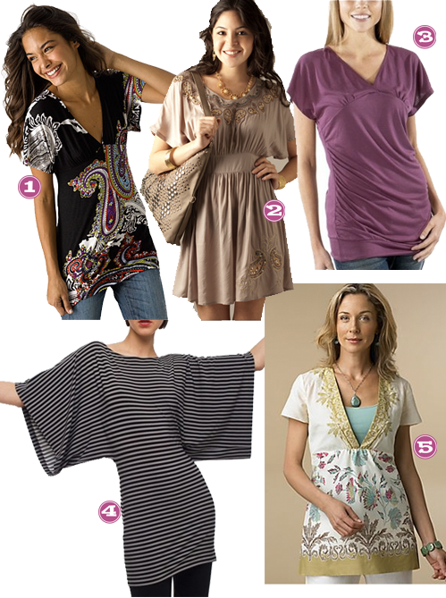
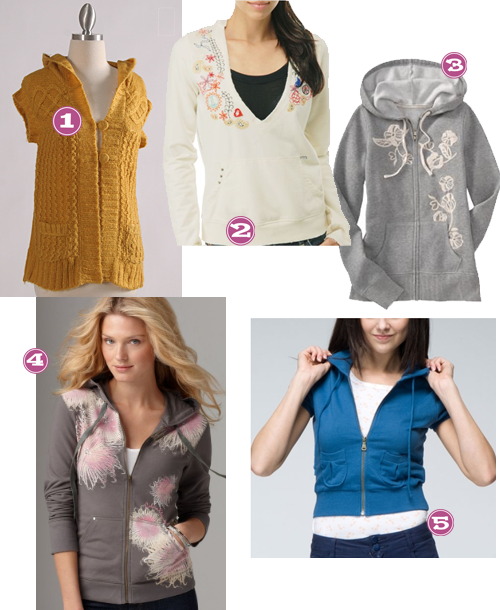

When do moms get to go back to school shopping? I know Aus got HOOKED up, and I am fallin hard for these fall essentials. I am definitely on the look out for some new pieces to add to my rotation and these have my name on them.


When do moms get to go back to school shopping? I know Aus got HOOKED up, and I am fallin hard for these fall essentials. I am definitely on the look out for some new pieces to add to my rotation and these have my name on them.
Last week was crossbodies…this week is clutches. Cute clutches at any price!

What’s your favorite? Or tell us about another clutch you use or are wanting!
If we are going to be attending one of these fabulous outdoor fiestas that AK keeps ranting and raving about…well, we need something festive to wear!

And from the inside from the inside out, Â you’ve changed, girl you know you have ??? (Ben Kweller)
Either way, this is one of the songs that I loved to sing with Ben or I loved to just sing blaring in my car/ipod/work/alone/workout!
Here’s to Sundresses!

Get it? You can thank Der for that knee slapper. So…to go along with my all.things.Asian.obsession, I’ve always wanted and loved Kimonos. In fact, I wore one for a particular Halloween (about 4 years ago) and I believe that just may have been the happiest day of my life, well next to various other moments (childbirth, meeting my love–you know, the usual ladies).

I guess as an attempt to relive that moment on Halloween, I been loving on the Kimono styled shirts. My picks:

So I STUMBLED upon these darlings while doing my normal troll through Francesca’s. Apparently there is a cute, funky and completely awesome way to store ugly papers on your desk. WHY DID NO ONE TELL ME????

The pics shown are the three that I scooped up (50 cents each!!!!) and I couldn’t be more tickled looking @ my desk sporting these things. My desk smiles back. Links to tons of these beauts.
I’m ready for the sun. Not alot of stores have gone completely tank top, sandals and shorts, but I am definitely ready for a little spring in my step.  Here are a few pieces and items that I plan on adding to my collection.

If you haven’t heard, I’m in love with anything with a hood. Kind of why Der calls me Sporty Spice. Love ALL of these.


So a few of these are completely outrageous, because I can’t imagine spending the $. Â But in a world where money didn’t matter, here is a list of the things I want to see under my tree.
Here are my picks from their fall arrivals….

I’m personally not a huge fan of scarfs, but for those who are, the Ruffled Up Scarf in Red looks like its super cute!  Love, love this store.


Recent Comments